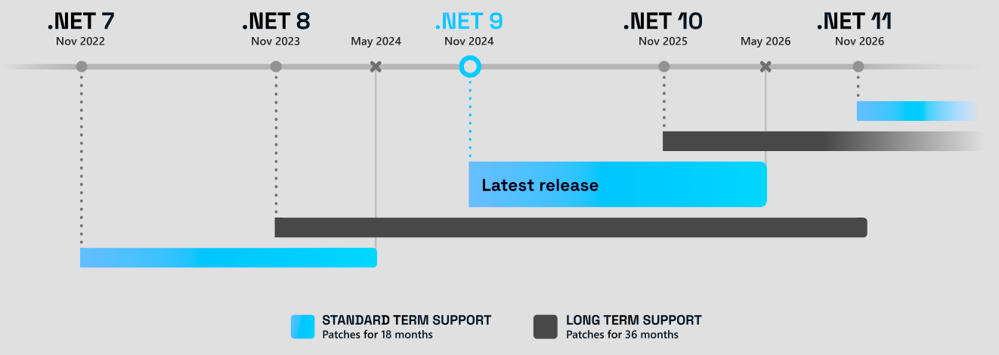

Descargar estos apunte en pdf o html
El microprocesador es el corazón de cualquier dispositivo electrónico, como un ordenador o un teléfono móvil. Se trata de un circuito integrado complejo que, en esencia, funciona como el "cerebro" del sistema, ya que es capaz de ejecutar las instrucciones que componen un programa. Estas instrucciones, conocidas como lenguaje máquina o código máquina, son específicas para cada tipo de microprocesador, lo que significa que un programa escrito para un microprocesador concreto no funcionará en otro diferente.
Para crear programas que un microprocesador pueda entender, los programadores utilizan un lenguaje de programación llamado ensamblador. El ensamblador es un lenguaje de bajo nivel que traduce las instrucciones escritas por el programador a código máquina que el microprocesador puede ejecutar. Cada microprocesador tiene su propio ensamblador específico, adaptado a su conjunto de instrucciones único. Aunque programar en ensamblador puede ser más complejo que utilizar lenguajes de alto nivel, ofrece un control preciso sobre el hardware y permite optimizar el rendimiento del programa.
Una plataforma es el entorno de hardware y software sobre el que se ejecuta un programa informático. Incluye el sistema operativo, el microprocesador, las bibliotecas de software y las herramientas de desarrollo necesarias para ejecutar y compilar programas.
Esto significa que aunque dos equipos usen el mismo microprocesador con el mismo conjunto de instrucciones, si ambos equipos usan sistemas operativos diferentes, los programas no serán compatibles ya que el proceso de carga y ejecución de los programas es diferente en cada sistema operativo.
Es por tanto que a partir de ahora nos referiremos a la plataforma a la hora de hablar de programas y no solo del microprocesador.
Programar directamente en ensamblador, aunque ofrece un control absoluto sobre el microprocesador, resulta una tarea ardua y propensa a errores para los programadores. Su sintaxis críptica y la necesidad de gestionar detalles de bajo nivel dificultan la escritura y comprensión de programas extensos.
Para solventar esta problemática, surgieron los lenguajes de alto nivel. Estos lenguajes, como Python, C o C++, emplean una sintaxis más cercana al lenguaje humano y abstraen gran parte de la complejidad del hardware subyacente. De esta forma, los programadores pueden centrarse en la lógica del programa en lugar de en los detalles de implementación. A la hora de ejecutar un programa escrito en un lenguaje de alto nivel, existen dos enfoques principales: la interpretación, donde un intérprete ejecuta el código directamente instrucción por instrucción, y la compilación, donde un compilador traduce previamente todo el programa a lenguaje máquina para su posterior ejecución, generalmente más rápida.
El interprete ejecuta el código fuente directamente para un plataforma, sin necesidad de una fase previa de traducción a lenguaje máquina. Cada instrucción se analiza y ejecuta en tiempo real, lo que permite una mayor flexibilidad y facilidad de depuración. Sin embargo, esta flexibilidad conlleva una pérdida de rendimiento, ya que el código se interpreta cada vez que se ejecuta, lo que ralentiza la ejecución del programa. Los lenguajes de script, como Python o JavaScript, suelen emplear este enfoque. Además, necesitaremos una implementación del intérprete para cada plataforma donde queramos ejecutar el programa.
Su uso es especialmente interesante cuando vamos a realizar pequeñas tareas o scripts que no requieran un gran rendimiento. Además, es muy útil para aplicaciones web o servidores que necesiten actualizarse constantemente sin interrumpir el servicio.
El compilador es una herramienta fundamental en el desarrollo de software, que transforma el código fuente escrito en un lenguaje de alto nivel comprensible para los humanos, un formato que la máquina puede entender y ejecutar. Este proceso involucra un análisis sintáctico del código para verificar su corrección y luego su traducción a un lenguaje ensamblador específico del microprocesador donde se ejecutará el programa. El resultado de esta compilación es un archivo conocido como código objeto, que contiene instrucciones en un formato intermedio.
Sin embargo, este código objeto no es directamente ejecutable. Requiere un paso adicional llamado "enlazado", donde se combina con otras bibliotecas y módulos necesarios para el funcionamiento del programa. El enlazador crea un archivo ejecutable final, que incluye un cargador para que el sistema operativo pueda ubicarlo en memoria y ejecutarlo. Este archivo ejecutable es específico de la plataforma y arquitectura de destino, lo que significa que solo funcionará en sistemas compatibles. Cada modificación en el código fuente implica una nueva compilación para generar un ejecutable actualizado. A pesar de este requisito, la ventaja de la compilación es una ejecución más rápida y eficiente del programa en comparación con otros métodos de traducción.
En el caso de los lenguajes de alto nivel, como C# o Java, la ejecución de los programas se realiza a través de un entorno de ejecución o runtime. Este entorno proporciona una capa de abstracción entre el código fuente y el hardware subyacente, lo que permite la portabilidad de los programas entre diferentes plataformas. El runtime se encarga de cargar, interpretar y ejecutar el código, así como de gestionar la memoria y los recursos del sistema. Además, proporciona una serie de bibliotecas y servicios que facilitan el desarrollo de aplicaciones, como la gestión de excepciones, la concurrencia o la entrada/salida.
Para ello usarán un bytecode o código intermedio que será interpretado por un JIT (Just In Time) o compilador en tiempo de ejecución que transformará el código intermedio en código máquina para la plataforma concreta.
2002 Aparece .NET Son una serie de tecnologías desarrolladas por Microsoft para interoperabilidad de aplicaciones con la red Internet en respuesta a la aparición de Java™️ de la mano de Sun Microsystems.
En sus inicios, se le denominó .NET Framework hasta la versión 4.8 aún en uso. Sin embargo, este framework solo estaba implementado y soportados en los sistemas operativos de Windows.
2004 Al estar publicadas las especificaciones del Framework como estándar por la ECMA se creo una versión de .NET Framework para entornos Unix, Linux denominada Proyecto Mono que a lo largo de su historia ha tenido diferentes impulsores
2012 Este año, Microsoft decidió redefinir la tecnología y el Framework para adaptarlo a las nuevas arquitecturas en la nube. Para ello, se baso en los siguientes pilares:
Como .NET Framework estaba hasta la versión 4.8.1, Microsoft le quitó el apellido 'Framework' y le puso 'Core'. De tal manera que, para evitar confusiones, esta nueva versión pasó a llamarse .NET Core desde las versiones 1.0 en el 2016 hasta la 3.1 en el 2019. Posteriormente aparece una versión 5 en el 2020 donde se le quita el apellido 'Core' y se queda .NET 5 a solas, pues ya no hay posibles confusiones con las versiones del antiguo .NET Framework
2021 Aparece la versión .NET 6 LTS aún con soporte y que dejará de usarse en noviembre de 2024.
2023 Aparece la versión .NET 8 LTS llamada a estar activa hasta 2026 donde deberíamos migrar a .NET 10.
2025 Aparece la versión .NET 10 LTS llamada a estar activa hasta 2028 donde deberíamos migrar a .NET 12.

Si vamos a la documentación oficial podemos resumir:
| Plataforma | Versión de C# |
|---|---|
| .NET Framework 4.8 | 7.3 |
| .NET Core 3.1 | 8 |
| ... | ... |
| .NET 8.x | 12 |
| .NET 10.x | 14 |
Nota
Como pasa en otros lenguajes con historia como por ejemplo Java, Php, C++, etc. tanto la sintaxis del lenguaje como las estructuras del mismo han ido evolucionando a lo largo de las versiones. Aunque a lo largo de los apuntes vamos a tratar de indicar la versión aquellos aspectos sintácticos relevantes. Nosotros nos vamos a centrar en las características más actuales del lenguaje. Sin embargo, es posible que veamos varias formas de hacer un mismo proceso. En este caso iremos indicando la versión de C# en la que se introdujo cada característica.
Como hemos comentado, en 2012 se publicó y estandarizó a través de la ECMA-335 la nueva arquitectura usada en .NET para que terceros pudieran hacer sus propias implementaciones y cuya primera implementación se liberó en 2016 bajo el nombre .NET Core 1.0.
En noviembre de 2025 se libera la versión .NET 10 LTS. Esta es la última implementación de esta arquitectura que cuenta con soporte de larga duración.
Sus componentes básicos comunes a sus predecesoras y que debemos conocer son:
| Espacio de nombres | Uso definiciones que contiene |
|---|---|
| System | Tipos muy frecuentemente usados, como los tipos básicos, tablas, excepciones, fechas, números aleatorios, recolector de basura, entrada/salida en consola, etc. |
| System.IO | Manipulación de ficheros y otros flujos de datos. |
| System.Collections | Colecciones de datos de uso común como pilas, colas, listas, diccionarios, etc. |